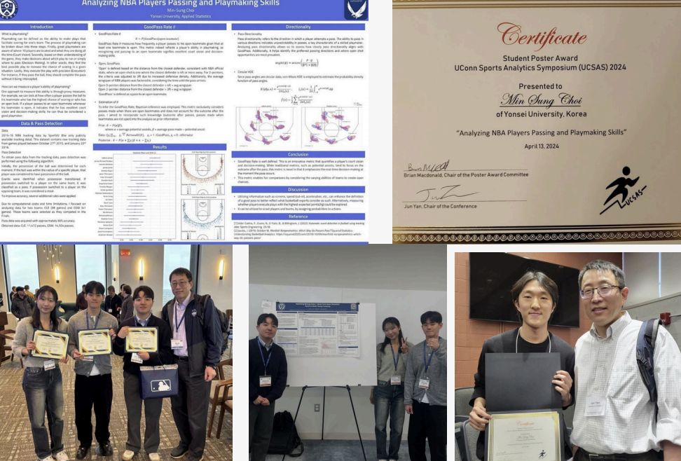

Events

Guest Speaker
외부 전문가를 초청해 연사 초청 특강 진행

Networking
고려대학교 스포츠 통계 분석 동아리 PAINS와의 교류 활동
단체 직관, MT 등 학회 내 친목 활동

Conference
CSAS, UUCSAS 등 스포츠 데이터 분석 대회 참여
데이터 전처리, 시각화, ML/DL
데이터 분석 이론, 통계 기법, 프로그래밍 및 모델링, 심화 스포츠 데이터 분석
논문 리뷰, 2차례의 팀별 프로젝트 진행
트래킹 데이터, 선수 가치 평가, RE24, 포수 프레이밍
딥러닝 모델링, BERT, GPT, Frontier LLM
확률 및 기초 통계, 회귀 분석, 가설 검정, 통계적 모델링
Tableau, 데이터 스토리텔링, 반응형 UI
외부 전문가를 초청해 연사 초청 특강 진행
고려대학교 스포츠 통계 분석 동아리 PAINS와의 교류 활동
단체 직관, MT 등 학회 내 친목 활동

CSAS, UUCSAS 등 스포츠 데이터 분석 대회 참여